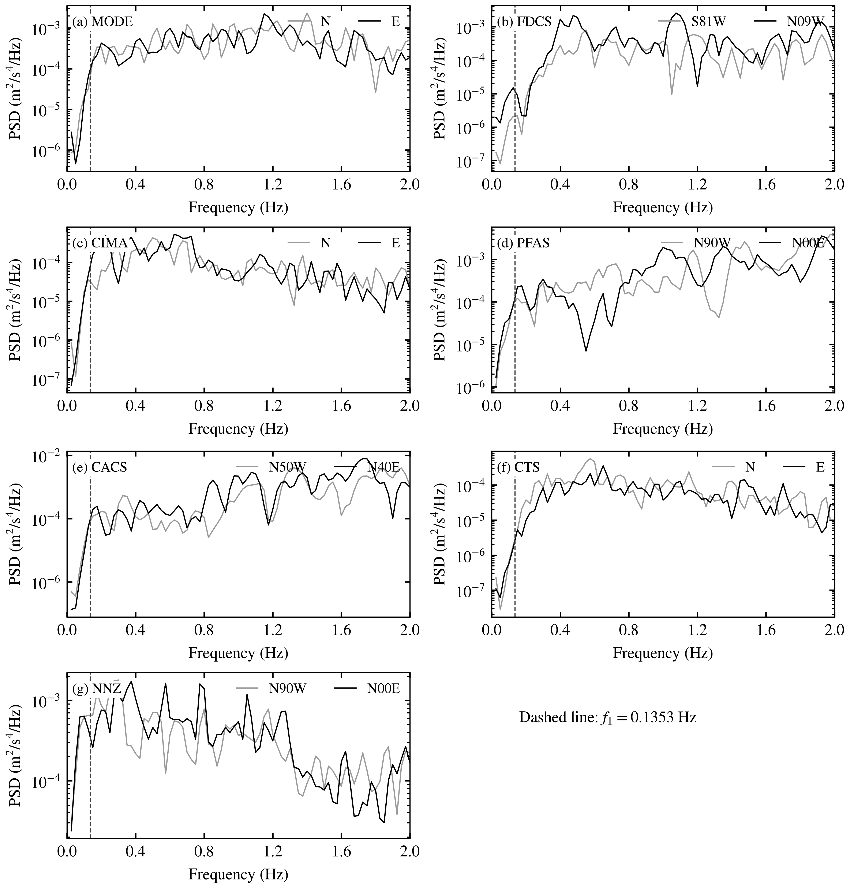
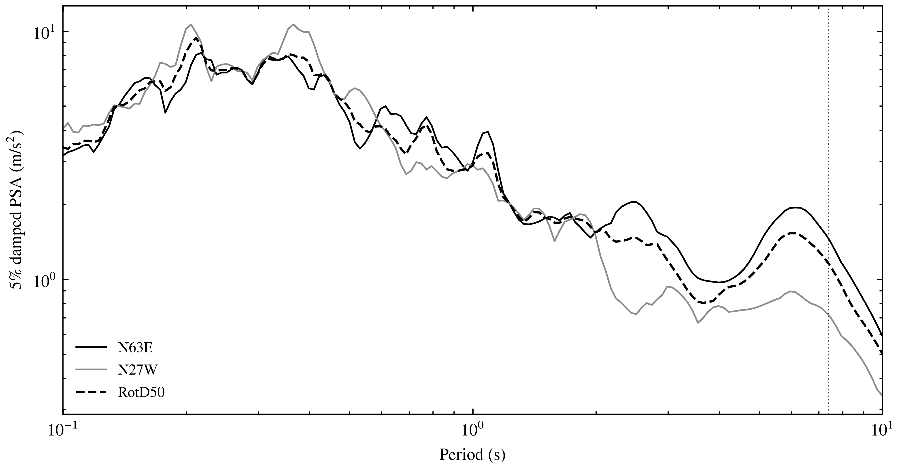
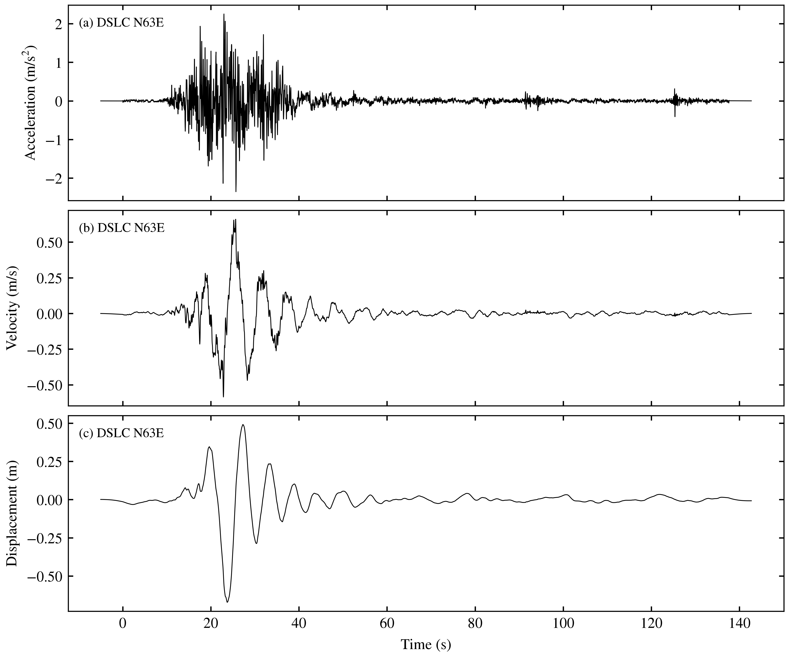

地震动 · 期刊制图
2026-11-24 · T079 · 七张真实计算图件 · 600 dpi PNG / SVG / PDF
当前优先任务：第二套文献候选波。 6/7组已读取真实时程：2组官方归档，2组论文匹配数值，2组调幅复现数据；E04仍缺时程，第三方数据转载与PEER原件核对待完成。V7仅作备用，停止继续完善备用组。下方V7图为历史成果，不是第二套七波。
第二套 · 文献候选波获取状态
| 编号 | 事件 / 台站 | 状态 |
|---|---|---|
| E01 | 1999 Chi-Chi / ILA004 | RSN1310 双水平数值；PGA匹配；33750点，dt=0.004s。N 源文件 · W 源文件 |
| E02 | 2010 Darfield / DSLC | GeoNet数值已归档 |
| E03 | 1999 Kocaeli / YPT-150 | RSN1176 双水平AT2；150°匹配；7000点，dt=0.005s。060 源文件 · 150 源文件 |
| E04 | 2010 El Mayor-Cucapah / 00022-90 | RSN5835 / CE.00022-90：PGA 57.28 cm/s²；仪器响应已取得，连续波形204；事件档案2011个文件完整筛选未含目标台站；CESMD注册下载待完成。获取证据 |
| E05 | 2011 Christchurch / SBRC | GeoNet原始数值复核通过；PEER分量及处理版本待核 |
| E06 | 2004 Niigata / NIG015 | RSN4205 调幅双水平；原波待核；16769点，dt=0.01s。NS 源文件 · EW 源文件 |
| E07 | 1992 Landers / Mission Creek Fault | RSN880 调幅双水平；原波待核；19963点，dt=0.005s。PEER官方编号24三分量已提取，各14000点，dt=0.005s，旋转及调幅版；与长时程复现版一致性未通过。官方三分量提取包（30天保留）。000 源文件 · 090 源文件 |
SBRC官方记录：2409点，dt=0.02 s；S59W/S31E/UP，PGA=0.4652/0.6854/0.1945 m/s²；低频过渡带0.05–0.10 Hz。真实获取收据。
2026-11-24 v0.32.191：SBRC三分量显著持时（D5–95）为12.375 / 13.936 / 16.712 s，真实SI数据复算通过。本轮新增波形0条；第一套不再制图。获取审计及数值结果 · 白皮书 v0.32.191。
v0.32.192：新读取E01/E03/E06/E07完整双水平数值；外部源文件链接固定到提交版本，未未经授权重新托管第三方波形。完整源级核验 · 研发白皮书。
v0.32.193：E04确定RSN5835，官方StationXML已取得；事件触发档案HTTP200但首轮超限，未获得目标波形。E07官方研究ZIP与XLSX均实读，已确定编号24，后续按序号提取，不能认作未调幅传感器轴原波。获取审计 · 白皮书。
v0.32.194：E07官方三分量已实际取得，FN/FP/UP PGA=0.281148/0.291820/0.195844g，精确SF=2.309816509105592；与长时程复现版逐点相对RMS差17.592%，不通过原波一致性验收。E04事件档案2011文件无目标站；正式原波仍待取得。真实获取及数值审核 · 交叉核验日志 · 白皮书。
一、七组地震动组合图（备用波组）
图1 七组地震动加速度时程

图2 七组地震动功率谱密度

图3 七组地震动反应谱与研究目标谱

二、DSLC文献同源地震动
图4 DSLC双水平加速度时程

图5 DSLC功率谱密度

图6 DSLC加速度反应谱

图7 DSLC N63E加速度、速度和位移时程

三、数据来源与计算证据
V7：ESM v3 / GeoNet NZSMDB；逐个调幅数据CSV SHA256核验。DSLC：GeoNet校正V2A实测记录。采用原始或已明确调幅的完整时程，未伪造地震数据。
实际计算运行：RUN45381499918 · SHA256核验清单 · 研发白皮书 · 制图源代码
研究归档 ef91754b329de13b8899a74f62d65623f63bf9cd；所有图件及数值直接保存在本工作室GitHub仓库中。